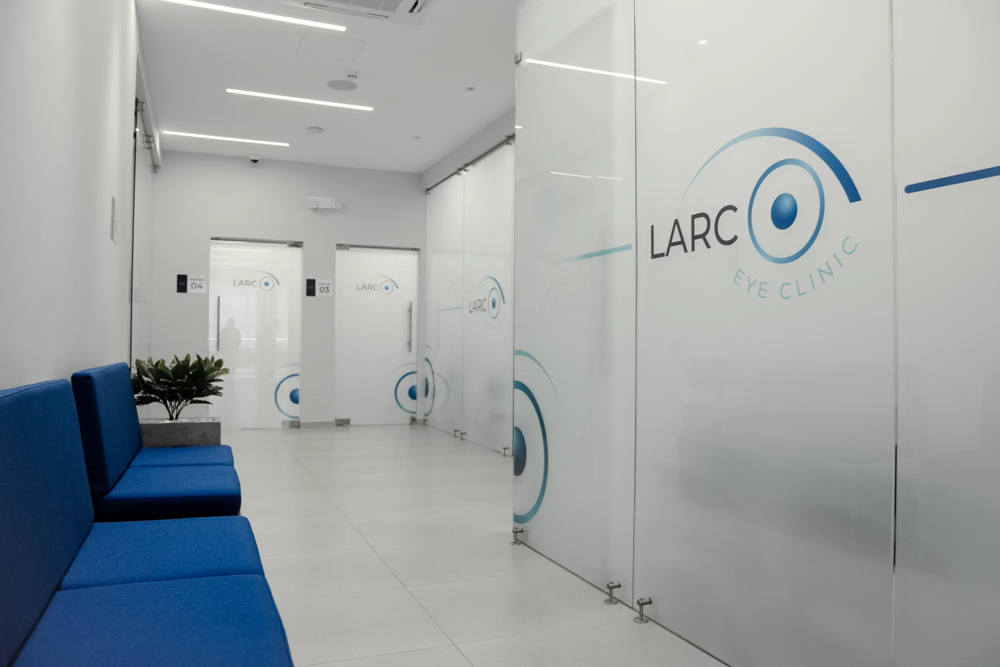

El primer paso hacia una mejor visión
Consulta oftalmológica integral y diagnóstico de alta precisión.
La consulta
La consulta oftalmológica es la puerta de entrada a tu cuidado visual. En ella, nuestros especialistas evalúan tu visión, revisan la salud de tus ojos y detectan a tiempo cualquier condición que requiera atención.
Es el momento para resolver tus dudas, entender tu diagnóstico y, cuando es necesario, planificar los siguientes pasos con claridad y sin prisa.
Cada paciente recibe una atención personalizada, porque cada ojo es distinto.

Exámenes de diagnóstico
Los exámenes son fundamentales para confirmar un diagnóstico y planificar con exactitud cualquier tratamiento o cirugía. Contamos con equipos de alta precisión que nos permiten ver lo que un examen convencional no alcanza.
Tomografía completa de la córnea, cara anterior y posterior. Permite seleccionar candidatos a cirugía refractiva, planificar el tratamiento del queratocono, calcular lentes para catarata y seguir la evolución de la córnea.
Mide todo lo que alcanzas a ver alrededor de un punto fijo. Es la prueba clave para detectar el glaucoma —el ladrón silencioso de la vista— y seguir su evolución, ya que esta enfermedad avanza sin que el paciente lo note.
Fotografía en color del fondo del ojo. Parte del chequeo básico a partir de los 40 años; detecta enfermedades de la retina como la retinopatía diabética incluso antes de que den síntomas.
Escáner de alta resolución que muestra las capas de la retina y el nervio óptico en 3D, sin contacto ni molestias. Indispensable para detectar y seguir enfermedades de la retina y el glaucoma.
Estudia los vasos sanguíneos de la retina en detalle, sin necesidad de inyectar contraste. Una exploración rápida y segura que permite detectar cambios muy tempranos en la circulación del ojo.
Examen fotográfico no invasivo, sin contraste, que revela alteraciones tempranas de la retina y la mácula.
Mide el ojo con precisión para calcular el lente intraocular exacto antes de una cirugía de catarata, buscando que el paciente quede con la menor medida residual posible.
Evalúa el grosor de la córnea y el ángulo del ojo, datos muy útiles en el estudio del glaucoma y la presión intraocular.
Relaciona el daño en la mácula con su impacto real en la visión, y ayuda en la rehabilitación visual de pacientes con baja visión.
Exploración detallada de toda la retina para detectar lesiones periféricas, desgarros o zonas de riesgo.
Examen de rutina con lámpara de hendidura que revisa en detalle las estructuras del ojo, con registro fotográfico o de video.
Evaluación completa de la vista, medición para lentes correctivos y tratamiento de problemas visuales comunes.
Agenda tu cita
Revisa tu visión con nosotros.